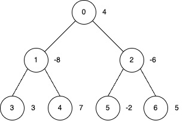
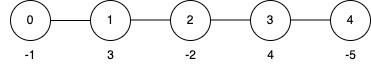

| Category | Difficulty | Likes | Dislikes |
|---|---|---|---|
| Algorithms | Hard | 45 | 6 |
You are given an undirected tree rooted at node 0, with n nodes numbered from 0 to n - 1. The tree is represented by a 2D integer array edges of length n - 1, where edges[i] = [ui, vi] indicates an edge between nodes ui and vi.
You are also given an integer array nums of length n, where nums[i] represents the value at node i, and an integer k.
You may perform inversion operations on a subset of nodes subject to the following rules:
Subtree Inversion Operation:
When you invert a node, every value in the subtree rooted at that node is multiplied by -1.
Distance Constraint on Inversions:
You may only invert a node if it is "sufficiently far" from any other inverted node.
Specifically, if you invert two nodes a and b such that one is an ancestor of the other (i.e., if LCA(a, b) = a or LCA(a, b) = b), then the distance (the number of edges on the unique path between them) must be at least k.
Return the maximum possible sum of the tree's node values after applying inversion operations.
Example 1:
Input: edges = [[0,1],[0,2],[1,3],[1,4],[2,5],[2,6]], nums = [4,-8,-6,3,7,-2,5], k = 2
Output: 27
Explanation:

nums array is [-4, 8, 6, 3, 7, 2, 5], and the total sum is 27.Example 2:
Input: edges = [[0,1],[1,2],[2,3],[3,4]], nums = [-1,3,-2,4,-5], k = 2
Output: 9
Explanation:

nums array becomes [-1, 3, -2, 4, 5], and the total sum is 9.Example 3:
Input: edges = [[0,1],[0,2]], nums = [0,-1,-2], k = 3
Output: 3
Explanation:
Apply inversion operations at nodes 1 and 2.
Constraints:
2 <= n <= 5 * 104edges.length == n - 1edges[i] = [ui, vi]0 <= ui, vi < nnums.length == n-5 * 104 <= nums[i] <= 5 * 1041 <= k <= 50edges represents a valid tree.